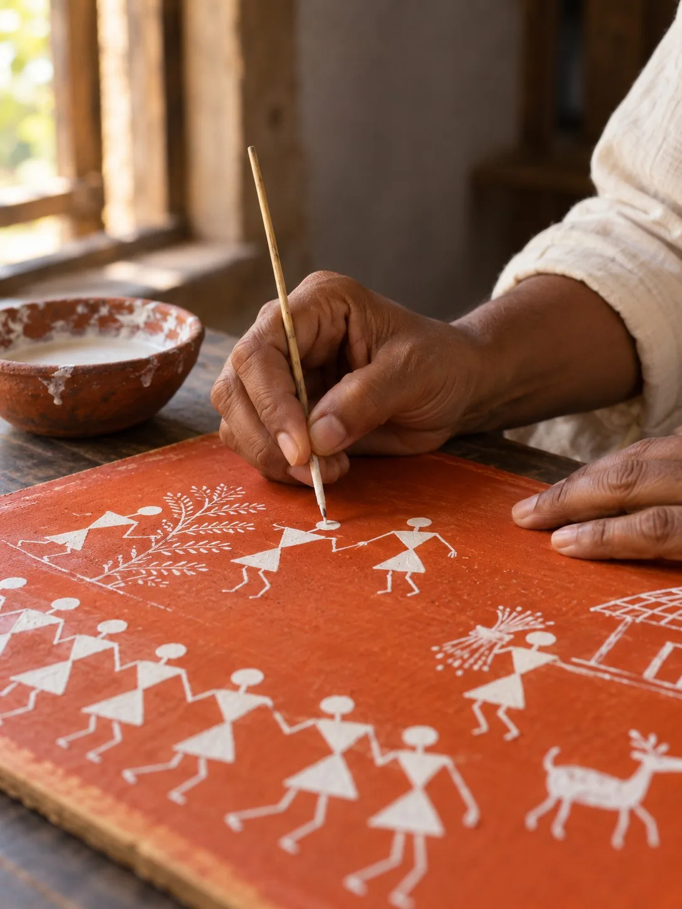
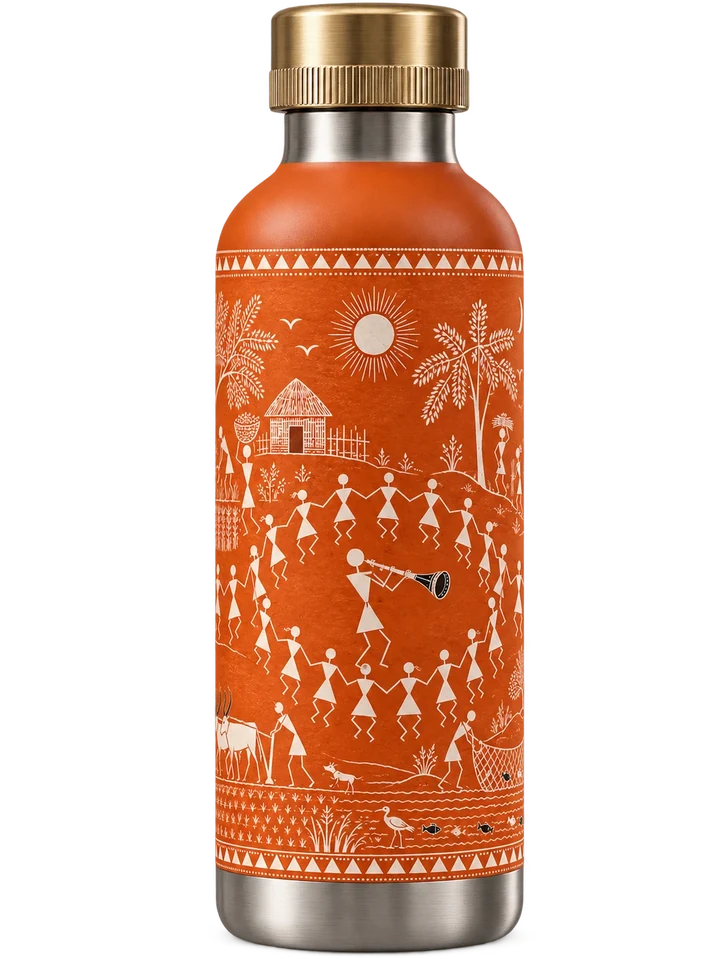
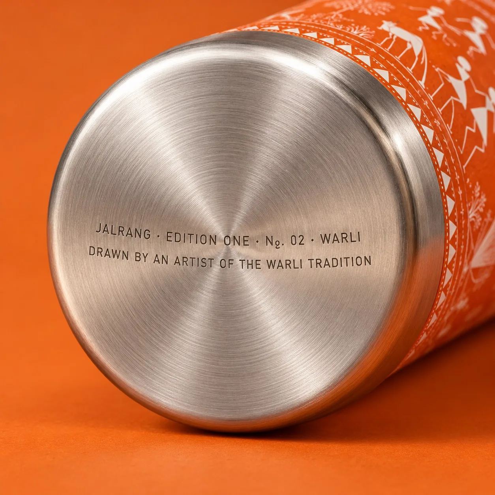
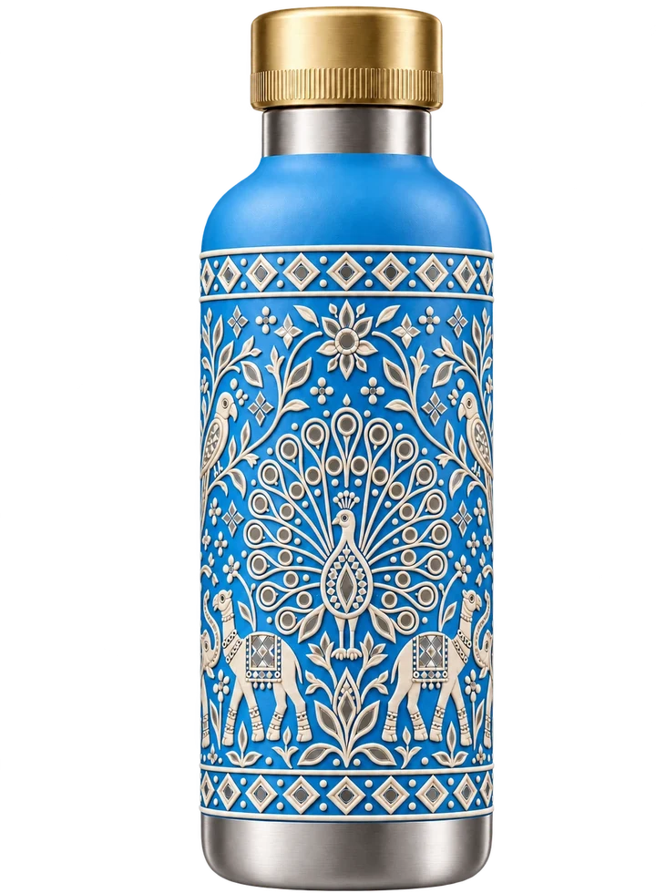

Edition One · 750 ml
Ten Indian art traditions, drawn all the way round.
Edition One is ten insulated steel bottles. Each carries one tradition, from Odisha to Kutch, and each has a colour of its own. Made in Morbi, Gujarat.
No. 01 · Pattachitra · Sindoor
A painting first.
Every edition begins as a full-size painting by an artist of that tradition. We print it round the steel in one piece, with the join at the back, and engrave the artist's name and the edition number on the base. Every bottle sold pays the artist.
- 01Painted at full size
- 02Printed round the steel in one piece
- 03Signed on the base



Edition One: ten bottles, in the order of the spectrum
09:00, the next morning
- In the glass
- 28°C
- In the bottle
- 9°C
Ahmedabad, May.
Ice water in at nine in the morning. Still cold at nine the next morning.
Hours measured with iced or boiling water, lid closed, at a room temperature of 25°C. The day shown above is an illustration.
- Brass cap, steel inner
- Inner wall, 18/8 steel
- Vacuum
- Painted band, 180 mm tall, all the way round
- Outer wall, 18/8 steel

No. 07 · Lippan · Aasmani
Out in the world.
06:12 · 1 / 7
Churchgate local, Mumbai
Neel · No. 08 Ajrakh
Illustrative clips made with AI for this concept. The people shown are not customers.
Edition One
Choose a colour. Carry it.
All ten, in a sheesham case — ₹46,000
Shop Edition One